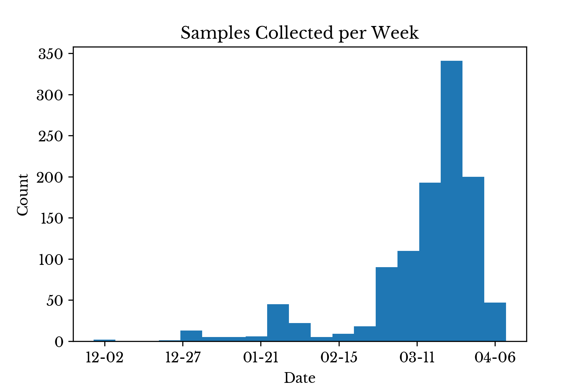
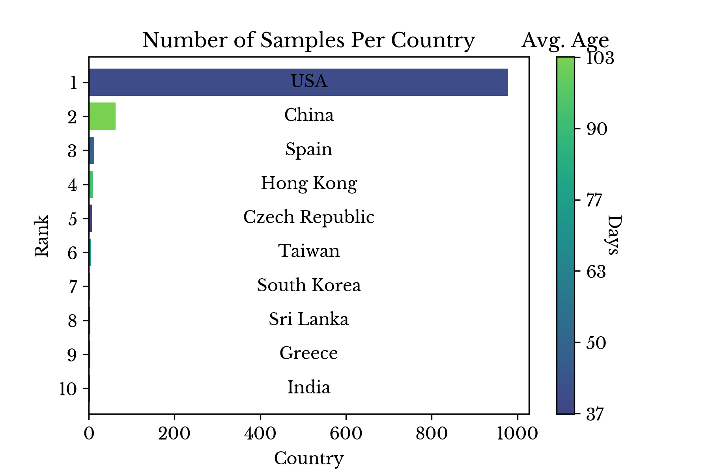
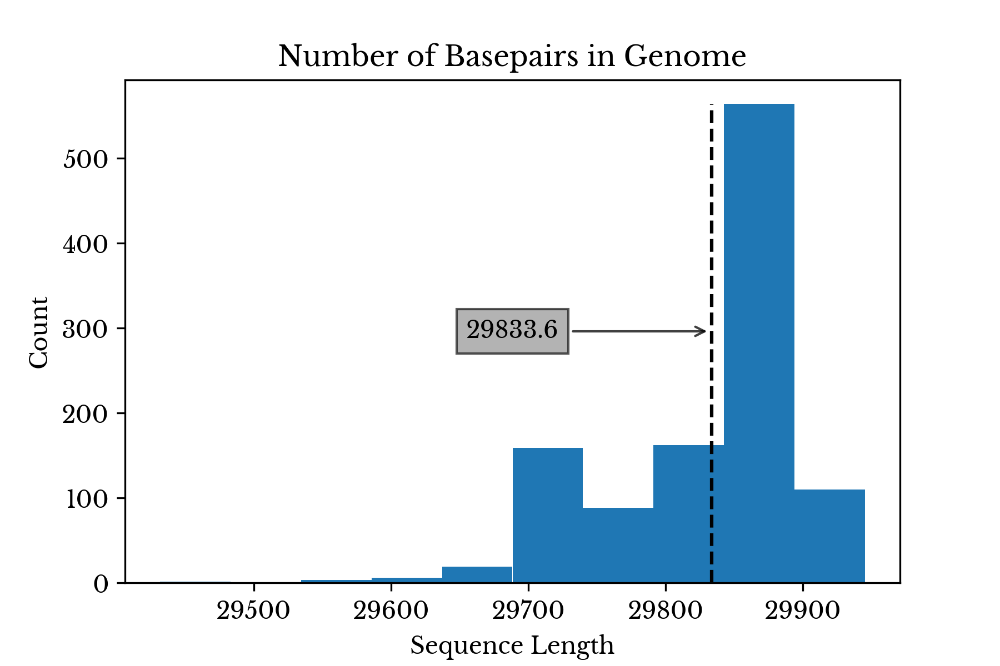
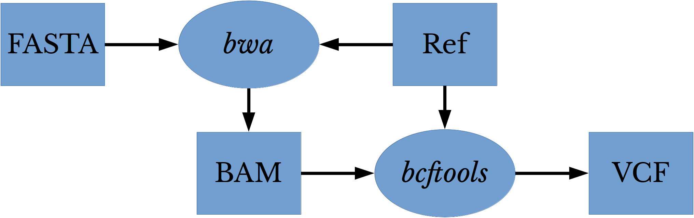
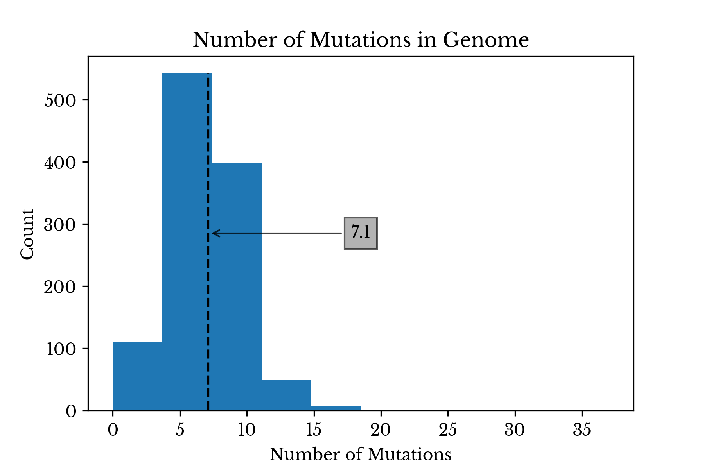
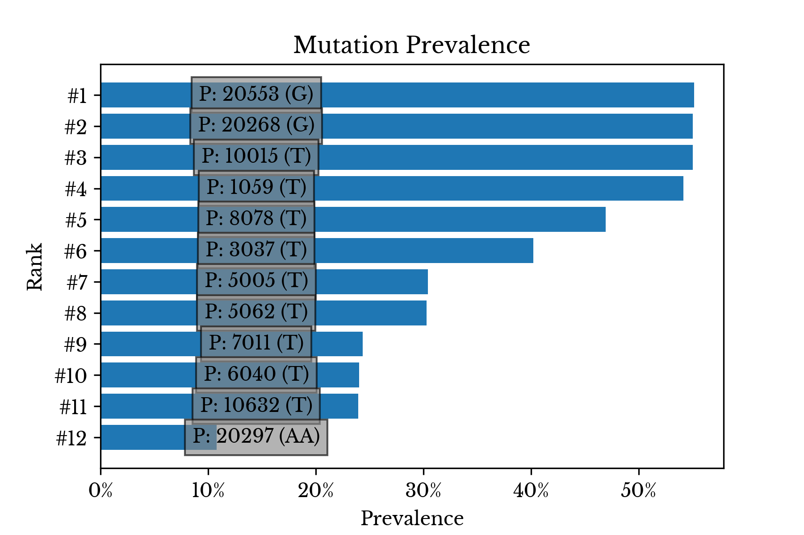
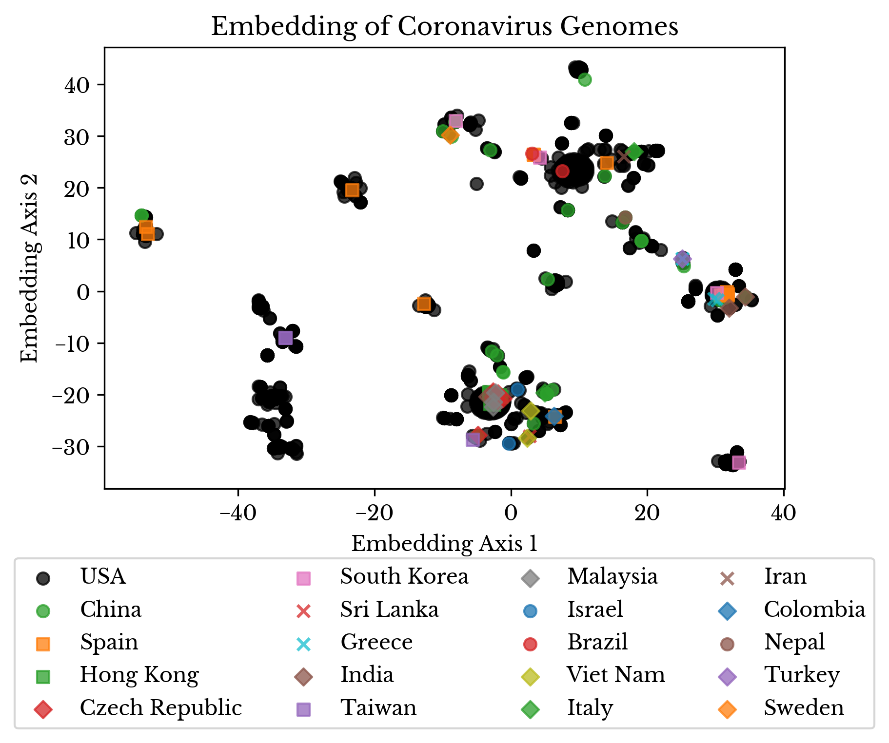
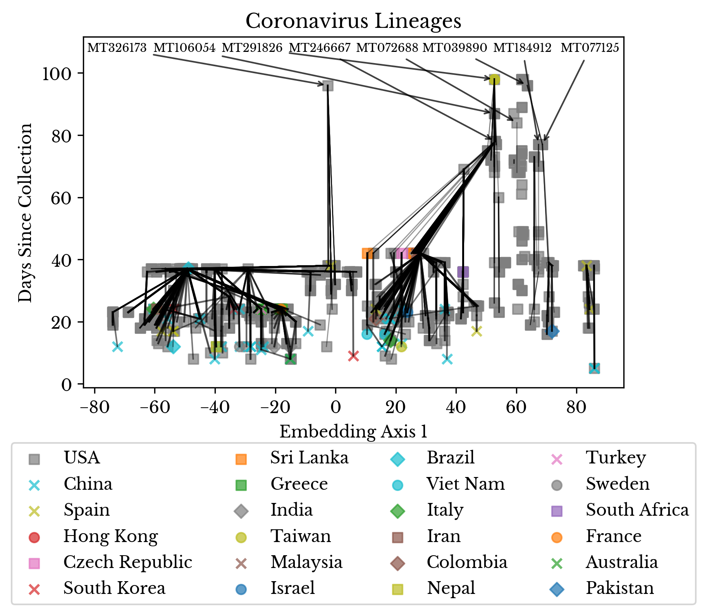
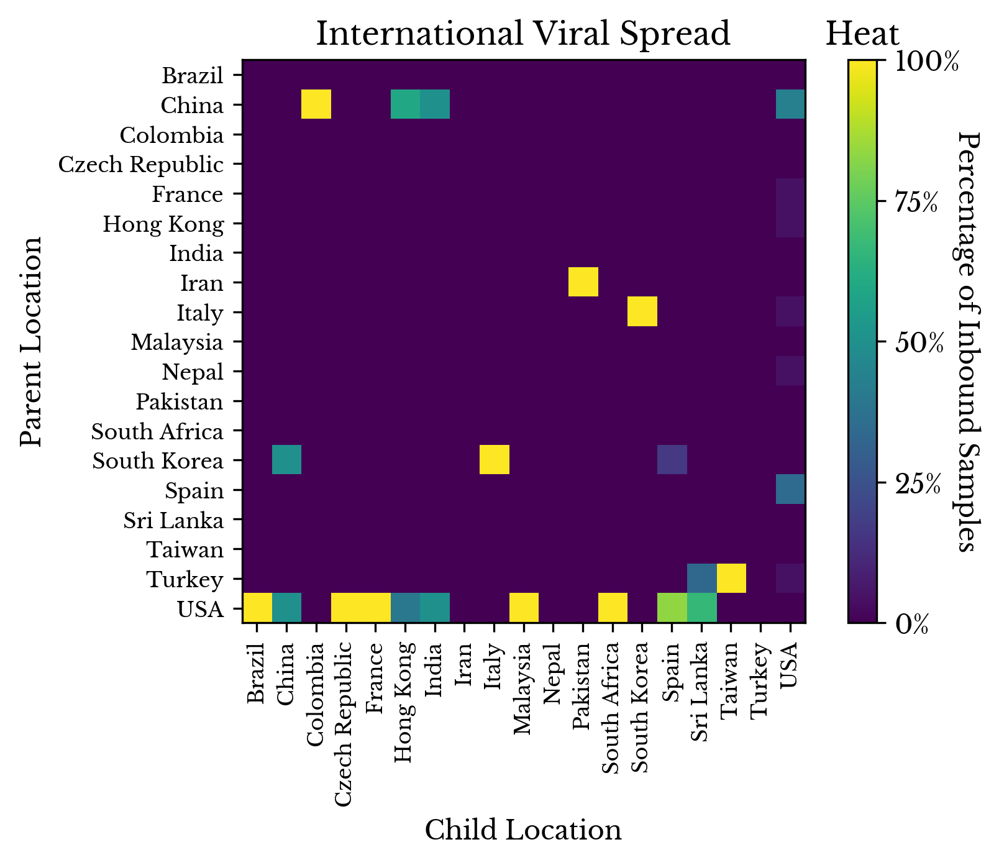

Visualizing Coronavirus Phylogenies with Genome Mutation Analysis
Sun, 26 Apr 2020
Bioinformatics, Coronavirus, Covid-19, Data Science, Data Visualization, Medicine
In this post, the severe acute respiratory syndrome coronavirus 2 (SARS-CoV-2) responsible for the recent pandemic is analyzed. Several attributes about the presently recorded virus genomes are plotted and genetic mutations in the sequences are traced to identify probable phylogenies among the samples.
Introduction
The first discovery of a coronavirus occurred in the 1930s. Two researchers isolated a virus causing infectious bronchitis, initially reported among a flock of chickens [1]. The subsequent discovery of coronaviruses capable of infecting humans came about thirty years later. The name coronavirus comes from the distinctive appearance of the virus in electron micrographs, arising from the many characteristic proteins protruding from its surface.
Metadata Analysis
The National Center for Biotechnology Information (NCBI) Virus maintains a database of sequence and associated metadata for a large variety of viruses. At the time of this writing, NCBI Virus has over one thousand SARS-CoV-2 genomes and this number is growing daily. The number of samples collected per week is shown in Figure 1.

Figure 1: Samples Collections per Week
In the early stages of the pandemic, relatively few virus variants are collected.

Figure 2: Number of Samples Collected by Country
Figure 2 shows the number of samples collected in each country along with the average number of days since collection. The majority of samples are collected recently in the USA. However, these results are likely influenced by the fact that the NCBI is a US organization.
Sequence Data
SARS-CoV-2 is an RNA virus in the family coronaviridae. With a genome composed of roughly 30 kilobases, the virus is one of the larger known RNA viruses. The sequences for over one thousand variants of SAR-CoV-2 are obtained in FASTA format from NCBI Virus. A histogram of the genome lengths for each of the coronavirus variants is shown in Figure 3.

Figure 3: Coronavirus Genome Length Distribution
The average length of the virus is 29,833 nucleobases with a standard deviation of 69.1 bases. The virus labeled
MT121215 has the longest genome with a length of 29945 bases.
Next, the samples are aligned to the reference sequence:
NC_045512 [2]. By aligning samples to the reference sequences, discrepancies in the lengths and bases of the various sequences are addressed and the variants can be compared for differences. The FASTA files are aligned to the reference using
bwa and the resulting BAM files are indexed. Finally,
bcftools is used to perform variant calling on the aligned files against the reference sequence.

Figure 4: Variant Calling Workflow
Figure 4 shows the workflow for performing alignment and variant calling on the various virus genomes. This process is repeated for each of the 1112 FASTA files. The result of the process is a variant call format (VCF) file for each virus genome. Each VCF file contains variants that the corresponding virus genome possess with respect to the reference sequence:
NC_045512.
The average number of mutations per virus genome is roughly 7.1. The virus
MT372482, collected in Malaysia, possess 37 mutations, the maximum number observed.

Figure 5: Distribution of Mutation Count
Figure 6 lists the most common mutations observed among the 1112 SARS-CoV-2 variants. The labels indicate the aligned position in the virus genome of the mutation along with the allele.

Figure 6: Most Common Mutations
The majority of the most common mutations are single nucleotide polymorphisms (SNP). An SNP occurs when one base is substituted for another. Some of the most common mutations are present in more than half of all the virus genomes.
Mutation Analysis
Next, the VCF files are loaded into memory using
sckit-allel. An encoded matrix is created where every row corresponds to a virus genome and every column to one of the observed mutations. Using this encoded matrix, both the average and maximum similarity between the virus genomes collected in each represented country is computed.
Figure 7: Virus Genome Similarity by Origin
Figure 7 shows the symmetric similarity matrix. A cell at row
i and column
j in this plot contains the average or maximum pairwise similarity of all virus genomes found in the countries denoted by the
i-th and
j-th axis labels respectively.
Next, both unique mutations and genomes possessing only unique mutations are filtered to produce a reduced matrix. Then, this encoded submatrix is projected into a lower dimensional subspace using the truncated singular value decomposition. Finally, a t-distributed stochastic neighbor embedding (TSNE) is fit and the resulting 2D plot is shown in Figure 8.

Figure 8: Embedding of Virus Genomes
By using TSNE, virus genomes that are close together in the higher dimensional space are closer together in the two-dimensional embedding. The color and marker of each point denote the country where each sample was collected.
Finally, an attempt is made to construct a phylogenetic tree from the virus genomes. SARS-CoV-2 is a single-stranded positive sense RNA virus. Similar viruses exhibit mutation rates in the range of
1e-6 to
1e-4 substitutions per nucleotide per cell infection. However, coronaviruses are thought to have lower mutation rates due to the size of their genomes [3].
As SARS-CoV-2 has a genome with roughly 30kb and a relatively low mutation rate, a simple, and perhaps somewhat naive, statistical argument is made. The argument is that it is likely for two viruses sharing a common mutation to be in the same lineage. Namely, it is more likely that one virus is descended from the other than for the two to merely share a common ancestor. For in the first case, the mutation occurs once and is passed down via viral replication, while, in the second, two mutations in the same position and of the same allele must occur independently.
With these assumptions in place, a plot is produced that attempts to reconstruct the partial lineage of the viruses. The
x-axis is a 1D TSNE embedding of the projected virus genomes. Thus, the horizontal direction provides a rough estimate as to how similar the viruses are to each other. The
y-axis contains the collection date of the sample, represented as days since the present.

Figure 9: SARS-CoV-2 Lineage Reconstruction
In Figure 9, the color and style of the plot marker indicate the country of collection. The thickness of the lines corresponds to the Jaccard index between the two encoded vectors of the samples. For each sample, a likely ancestor virus is identified. This likely ancestor is an older sample with the maximum Jaccard index, at least one common mutation, and no less than 35% similarity overall.
Finally, Figure 10 attempts to quantify the lateral movement of the virus. The ancestor relationships are recorded in a matrix. For each sample collected in the
i-th country with a descendant in the
j-th country, the cell at row
i and column
j is incremented. Finally, the columns are normalized so they sum to one.

Figure 10: Tracing Viral Spread
By reading down a column, the distribution of imported infections is obtained. Reading across the row for China, there appears to be evidence that viruses with origins in China spread to Colombia, Hong Kong, India, and the USA. Looking at the column for Pakistan, it appears that viruses in Iran may have spread to Pakistan, which is plausible given their proximity. Finally, in the last row, viruses from the USA appear to have spread to many other countries.
Conclusion
Analysis of mutations in viral samples collected in a pandemic offers insight into the mutation rate and behavior of the underlying pathogen. Statistical techniques can be used to approximately reconstruct the movement of the virus and identify likely phylogenetic trees among the viral genomes.
References
| [1] | Beaudette F., Hudson C. "Cultivation of the virus of infectious bronchitis." Journal of the American Veterinary Medical Association. 1937;90:51–60. |
| [2] | Baranov, Pavel V., et al. "Programmed ribosomal frameshifting in decoding the SARS-CoV genome." Virology 332.2 (2005): 498-510. |
| [3] | Sanjuán, Rafael, et al. "Viral mutation rates." Journal of virology 84.19 (2010): 9733-9748. |
{kind=link}
{kind=link}
{kind=link}
{kind=link}
{kind=link}
{kind=link}
{kind=link}
{kind=link}
{kind=link}
{kind=link}
{kind=link}